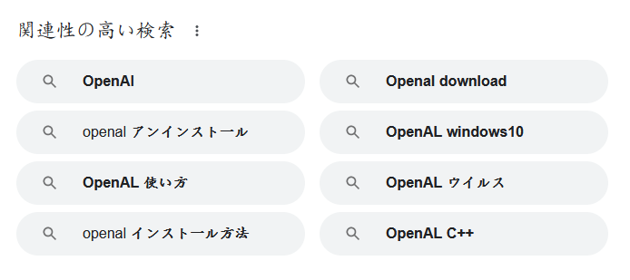

シンセサイザーといってもそんな御大層な物ではありません。キーボードを正弦波が出る鍵盤にします。
OpenAL
OpenGLは有名なので説明しません。OpenALはフリーのオーディオライブラリです。OpenGLとの相性がいいらしいです。いろんなゲームで使われています。unityでも使われているらしいです。最後に更新されたのは2010年7月20日です。検索するとOpenAIと間違われます。
俺が検索したのはOpenALだ。OpenAIじゃない。ふざけるな！！

アンインストールだのウイルスだのそんな悲しいこと言わないで。関連性が高いどころか関連性の全くないOpenAIは引っ込め。
実装
1~9の数字キーを押すと対応する音が鳴るようにします。以下がソースコードです。
github
#define _USE_MATH_DEFINES
#include <stdio.h>
#include <math.h>
#include <al.h>
#include <alc.h>
#include <GL/glut.h>
ALCdevice *device;
ALCcontext *context;
ALshort waveData[48000];
ALuint buffer;
ALuint source;
int SamplingFrequency;
double baseFrequency = 440.0;
double frequency;
void GetKey(unsigned char key, int x, int y)
{
frequency = baseFrequency * pow(2.0, ((key - 49.0) / 12.0));
alSourceStop(source);
alGenBuffers(1, &buffer);
alGenSources(1, &source);
for (int i = 0; i < 48000; i++)
{
waveData[i] = 32767.0 * sin(2 * M_PI * frequency * i / SamplingFrequency);
}
alBufferData(buffer, AL_FORMAT_MONO16, waveData, sizeof(waveData), SamplingFrequency);
alSourcei(source, AL_BUFFER, buffer);
alSourcei(source, AL_LOOPING, AL_TRUE);
alSourcePlay(source);
}
void Display()
{
glClear(GL_COLOR_BUFFER_BIT);
}
int main(int argc, char *argv[])
{
device = alcOpenDevice(NULL);
context = alcCreateContext(device, NULL);
alcMakeContextCurrent(context);
alcGetIntegerv(device, ALC_FREQUENCY, 1, &SamplingFrequency);
glutInit(&argc,argv);
glutInitDisplayMode(GLUT_RGBA);
glutCreateWindow("synth");
glutDisplayFunc(Display);
glutKeyboardUpFunc(GetKey);
glutMainLoop();
return 0;
}
1を押すとA4(440Hz)、2を押すとA#4、3を押すとB4というように、数字が大きくなると黒鍵を含めた鍵盤の順に音が高くなります。キーボードの9までです。それ以外のキーを押しても音は鳴りますが、音は鍵盤の順にはなりません。
解説
キーボードのいずれかのキーが押されると、関数GetKey()が実行されます。関数GetKey()内部では、押されたキーによって周波数を決定し、波形を生成し、再生します。キーボードの入力を受け取ると、プログラムはASCIIコードで受け取ります。ASCIIコードの詳細に関してはリンク先を参照して欲しいのですが、要は文字に対して数を割り当てて管理しているのです。1~9の文字の場合、1から順に49~57が割り当てられています。そのため、キーボードで1が押されると、プログラムでは49の数値として受け取ります。それらを元として周波数を計算しています。
おわり
このプログラムにおいてOpenGLは飾りです。やろうと思えばOpenALとOpenGLでDAWも作れそう。
参考文献
- ASCIIコード表, 田村仁研究室 日本工業大学創造システム工学科, 2023/11/26
更新履歴
- 2023/12/7
- コード修正
- githubのリンク追加
- 2023/11/26
- 記事作成